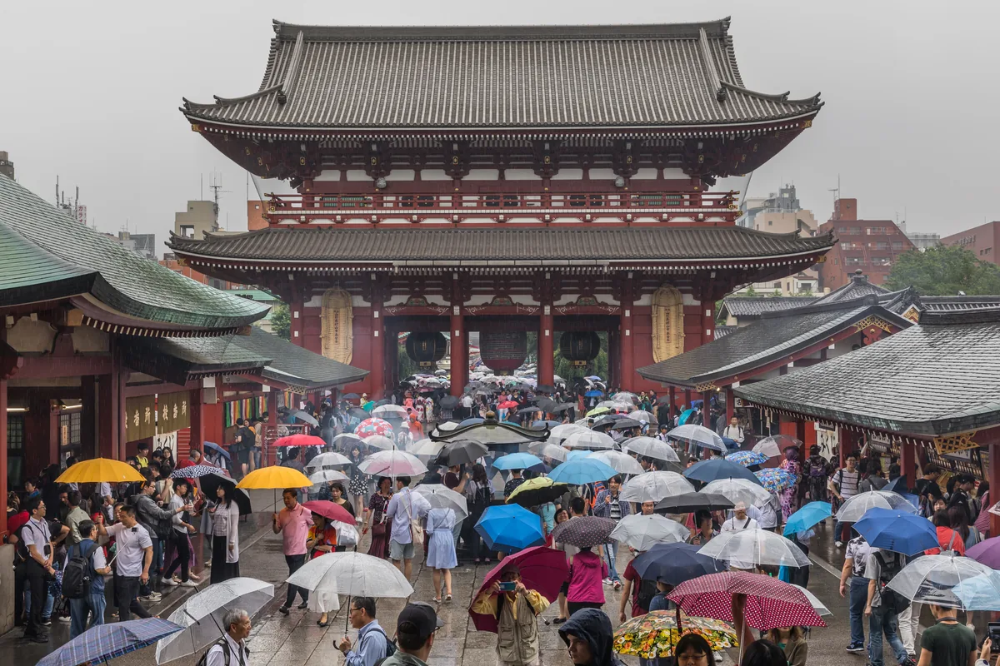
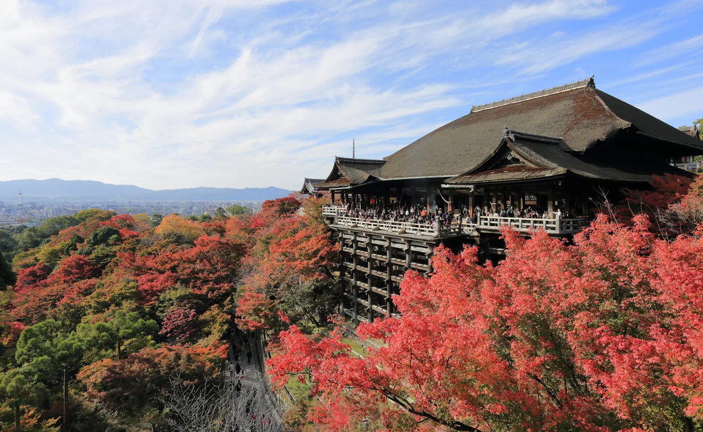
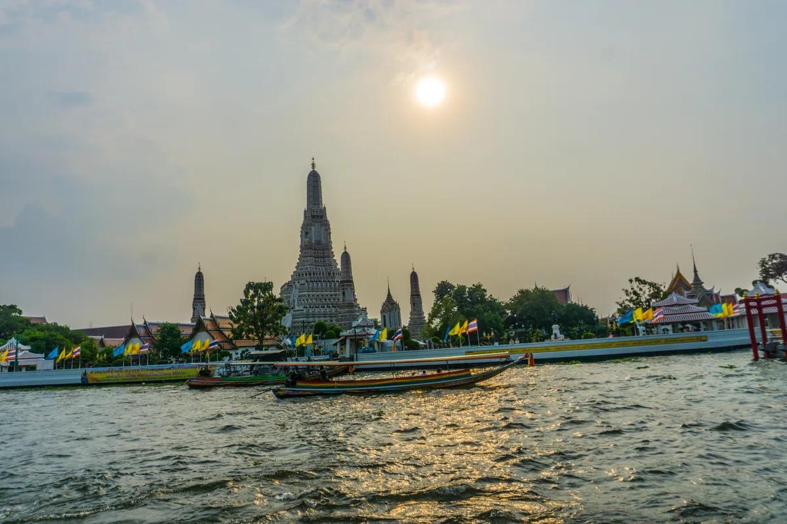
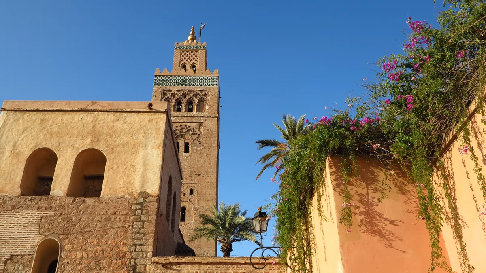

Tokyo, Kyoto, Bangkok & Marrakesh
Review the exact guide copy and proposed hero/card photographs together. These are the current product crop ratios and focal points; on mobile the hero and card use their existing responsive proportions. No content, image or crop is approved by this packet.
Source and licence checks passed for these candidate assets. Local code corrects Tokyo/Kyoto planning targets while keeping the four public guide routes unpublished. Missing prices remain unknown.
Tokyo
Editorial: PASS after listed corrections · owner approval pending
English v4 · place:Q1490 · photo commons:80694116
Tokyo is easier to plan as a few neighbourhood outings than a citywide checklist. Pair Asakusa with the Skytree area, and keep Meiji Jingu and Yoyogi Park together on a different day. Your airport and nearest station matter as much as the district name.

Basile Morin / Wikimedia Commons / CC BY-SA 4.0 · resized to WebP; cropped for display
Individual Commons file · CC BY-SA 4.0 · photograph date 2019-06-07
Hōzōmon at Sensoji, not Kaminarimon. The file description, camera location in Asakusa and the visible two-storey gate agree with the official Tokyo temple-area map.
Rainy-day photograph from June 2019; not evidence of expected weather, current crowd levels or access. Desktop hero emphasizes the gate; the mobile hero and card retain more of the umbrellas.
Exact editorial corrections
- Added operator-supported daylight/entry guidance and an existing-attraction alternative if Skytree deck entry is unavailable. No museum visit or fixed closing day is invented.
Original, responsive files and publication pins
Original file unchanged. Lossy WebP resizing without upscaling or retouching; responsive derivatives retain original aspect ratio. CSS object-fit cover uses the exact proposed focal point for desktop/mobile hero and card. Derivatives retain CC BY-SA 4.0; retain author, source, licence link and change notice. No endorsement is implied.
Original: 5948 × 3965; SHA256 3271ee2a585dd3e674b55d14dccb4fb3b1f06b1869d557d85fad9e2081e0fa0d.
Responsive WebPs: 640 × 426 (63,982 bytes), 1200 × 800 (197,680 bytes), 1920 × 1280 (452,416 bytes). No enlargement or original replacement.
Content digest: 281b25051b5d223809b908e5a85d753473195e31fa5e1b8b78e008f540a113d2
Kyoto
Editorial: PASS after listed corrections · owner approval pending
English v4 · place:Q34600 · photo commons:53593907
Start a short Kyoto stay with the eastern temple streets. Kiyomizu-dera, Yasaka Pagoda and Yasaka-jinja fit a focused outing; with another day, consider a separate rail journey to Fushimi Inari. Respect worship spaces and residential lanes.

Martin Falbisoner / Wikimedia Commons / CC BY-SA 4.0 · resized to WebP; cropped for display
Individual Commons file · CC BY-SA 4.0 · photograph date 2016-11-16
Kiyomizu-dera main hall and stage in eastern Kyoto. Individual Commons description, recorded camera location and the temple operator’s site plan/Okuno-in viewpoint establish the place.
Autumn photograph from November 2016; colours and building appearance are historical, not a seasonal forecast or proof of current works. The source already crops the far-right edge of the complex.
Exact editorial corrections
- Grouped Hokan-ji with Kiyomizu-dera on day two of the two-night outline; moved the optional Maruyama Park break to the final day. This avoids a separate return to the hillside just for the pagoda.
- Added a conditional public-street/exterior alternative when temple entry is unavailable, with private-lane and worship restrictions preserved.
Original, responsive files and publication pins
Original file unchanged. Lossy WebP resizing without upscaling or retouching; responsive derivatives retain original aspect ratio. CSS object-fit cover uses the exact proposed focal point for desktop/mobile hero and card. Derivatives retain CC BY-SA 4.0; retain author, source, licence link and change notice. No endorsement is implied.
Original: 5852 × 3601; SHA256 4e51e74278c020e1ed5208aa674d057b6437e50a190278647066dc4b692a8b7b.
Responsive WebPs: 640 × 394 (60,786 bytes), 1200 × 738 (213,820 bytes), 1920 × 1181 (514,758 bytes). No enlargement or original replacement.
Content digest: 06775e61bf75f37c23f367d8a822681d7676dd83549ae68246b2944ce3db378e
Bangkok
Editorial: PASS after listed corrections · owner approval pending
English v4 · place:Q1861 · photo commons:82660408
Bangkok’s royal temples, river crossings and Chinatown work best as a few connected outings. Keep the Old City together, leave breaks between interiors and plan your airport journey from the actual airport code.

Trip.with.taste / Wikimedia Commons / CC BY-SA 4.0 · resized to WebP; cropped for display
Individual Commons file · CC BY-SA 4.0 · photograph date 2018-12-24
Wat Arun on the Thonburi bank of Bangkok’s Chao Phraya River. Individual description, Thai monument identity and recorded camera location agree with TAT’s official Old City geography.
River-boat photograph from December 2018 with a naturally tilted horizon. No sunset, boat service, flag display or present visitor conditions are promised.
Exact editorial corrections
- Added the official palace calendar and explained that the palace and Wat Phra Kaew can have different access restrictions. The current calendar actually lists the palace closed on 23 October 2026; no permanent weekly rule is inferred.
- Added Wat Pho or Wat Arun as alternatives only after checking their own visitor arrangements; no availability or ticket equivalence is promised.
Original, responsive files and publication pins
Original file unchanged. Lossy WebP resizing without upscaling or retouching; responsive derivatives retain original aspect ratio. CSS object-fit cover uses the exact proposed focal point for desktop/mobile hero and card. Derivatives retain CC BY-SA 4.0; retain author, source, licence link and change notice. No endorsement is implied.
Original: 6000 × 4000; SHA256 bb4c9f51685d7f657103fcc607f0a799ddb38b17504ecaed56b17b34c2469618.
Responsive WebPs: 640 × 427 (38,566 bytes), 1200 × 800 (116,574 bytes), 1920 × 1280 (258,534 bytes). No enlargement or original replacement.
Content digest: 77e36dd1b2f2e4a8897900327bda24b23479ea478daf1cbca07371e5091f6fee
Marrakesh
Editorial: PASS after listed corrections · owner approval pending
English v4 · place:Q101625 · photo commons:72262779
Marrakesh rewards a plan that leaves room for the medina as well as gardens outside it. Compare an old-city base with a wider-street district before booking, and ask how you will reach the exact entrance with luggage.

Philippe Salgarolo / Wikimedia Commons / CC BY-SA 4.0 · resized to WebP; cropped for display
Individual Commons file · CC BY-SA 4.0 · photograph date 2018-01-19
Koutoubia mosque/minaret in Marrakesh, Morocco. Individual description and distinctive minaret agree with official Moroccan tourism identity. This is an exterior view, not a mosque-interior access promise.
Photograph from January 2018; historic view, not evidence of current flowers, weather or access. The top-aligned hero preserves the minaret finial.
Exact editorial corrections
- Changed the garden source to its official English page and explicitly limited the guide to Jardin Majorelle, without implying access to Villa Oasis or either separately ticketed museum.
- Added a medina/Koutoubia exterior alternative if garden entry is unavailable. No museum closing-day rule is needed by the proposed itinerary.
Original, responsive files and publication pins
Original file unchanged. Lossy WebP resizing without upscaling or retouching; responsive derivatives retain original aspect ratio. CSS object-fit cover uses the exact proposed focal point for desktop/mobile hero and card. Derivatives retain CC BY-SA 4.0; retain author, source, licence link and change notice. No endorsement is implied.
Original: 4352 × 2448; SHA256 3e6409bbb117494eb422a545671329a992fd05c8b50606dccee45ea141e5b085.
Responsive WebPs: 640 × 360 (49,446 bytes), 1200 × 675 (169,610 bytes), 1920 × 1080 (398,450 bytes). No enlargement or original replacement.
Content digest: 46d0181933beb42addf5da83e80241c69ec85ca5bb81d8c3945023360918a743
Approval boundary
Review the four English v4 drafts, identities, sources, itinerary ordering and freshness requirements. Media approval must name the four exact Commons IDs, crops, responsive derivatives, credits and CC BY-SA obligations. All reviewer/signature fields remain empty until you approve.
No new public guide route, image selection, numerical cost profile or sitemap entry has been activated. Tokyo/Kyoto targets are verified locally; existing published guides remain unchanged.
Read the exact approval wording · Editorial pins · Media pins · Local checks and limitations